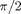

SAMPLE INPUT FILE
Contents
- Defining gra as a Global variable
- Input the parameters for molecule information
- Values for Constructing Internal Hamiltonian
- Input parameters for GRAPE sequence
- Initial guess for the GRAPE sequence
- Target parameters
- Parameters for GRAPE spequence when converting to bruker format
- Parameters for RF inhomogenity
- PENALTY conditions
- Stoping conditions
Defining gra as a Global variable
clc
global gra
Input the parameters for molecule information
See prodop for more details
Example : spinlist=[2 1 2] for total of 5 spins out of which 1-2 and 4-5 are homonuclear and (1-2),3,(4-5) are hetronuclear
gra.spinlist=[3];
Example : spinNumbers=[1/2 1 3/2] 1-2 have spin=1/2, 3rd have spin=1 , 4-5 have spin=3/2
gra.spinNumbers=[1/2];
Values for Constructing Internal Hamiltonian
Offset values
v(1) = 11860.8;
v(2) = 0;
v(3) = -17379.09;
J-Coupling values
J=zeros(sum(gra.spinlist));
J(1,2) = 69.9;
J(2,3) = -128.25;
J(1,3) = 47.4;
Input parameters for GRAPE sequence
Number of control parameters
gra.m = 2*length(gra.spinlist);
Number of Time Steps
gra.N = 1000;
Duration of each Time step
gra.del_t = 10e-6;
Initial guess for the GRAPE sequence
See initial_u for more details.
Maximum RF-power of the initial guess.
u_max = 8000;
Number of points after which a random value has to be chosen
R=40;
u=initial_u(u_max,R);
Target parameters
Define the vaue of initial and final delay
gra.initdelay = 5e-6;
Target Operator
gra.Utarg = expm(-1i*pi*Ix(:,:,1));
Initial Step Size (See GRAPE Paper for details)
epsilon=5e+7;
Target Fidelity
targ_fide=.999;
Parameters for GRAPE spequence when converting to bruker format
Name of the file in which all the details will be stored
gra.GRAPEname = 'allnew_freezing_U359_2cyc';
Parameters for RF inhomogenity
load rfi8_5pt.txt
rfi=rfi8_5pt;
gra.rfINHrange = rfi(:,1);
gra.rfINHiwt = rfi(:,2);
PENALTY conditions
see penalty and penalizecontrols for more details. Following is the length of the calibarated  pulse
plength = 15.6e-6;
Stoping conditions
Setting the threshold for stopping
gra.threshold = 1e-15;
Stop after following number of iterations if fidelity is not increasing more than gra.threshold
stop_counter = 100;
Start saving after the following value of fidelity is Reached
saving_fidel = 0.90;
Save after every iteration given by following number when saving_fidel is reached
iter_no = 60;